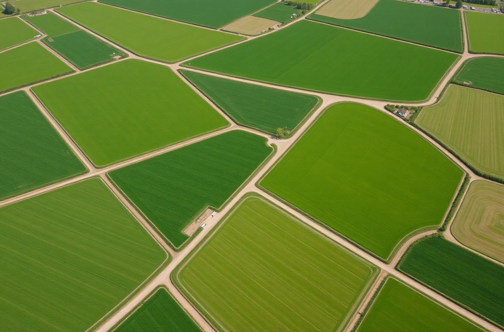

Move beyond paper and spreadsheets. Agranora helps small and medium farms manage daily operations, ensure traceability, and simplify compliance — all on an open, modular platform built around the farmer.
The problem · the shift
Stop losing critical data in muddy notebooks and scattered spreadsheets.
Every harvest, treatment, and lot is recorded right where it happens — in the field.
Built on FarmOS-inspired foundations. You own your data and choose what to use.
Benefits
Agranora turns the daily reality of your farm into structured, useful information — without making it more complex.
Features
Practical tools that respect your time and your experience.
Enter data deep in the field without signal. Syncs when you're back.
Track seeds, inputs, and harvests across plots and seasons in real time.
Generate organic certification and compliance reports with a single click.
Grant roles to workers, agronomists, or certifiers — no shared passwords.
Open · Modular · Yours
Agranora is built on an open-source core inspired by FarmOS. Farmers should own the data they generate and the tools they use to generate it. The platform is modular — it grows from a single greenhouse to multi-site cooperatives.

Our vision
We believe sustainable agriculture deserves software that is honest, open, and useful. Agranora is shaped by what happens between the rows of crops — not by what looks good in an office.
Join a growing community of farms going digital for the right reasons. Simple, open, and built for you.
Early access for small and medium farms. No spam — just product updates.